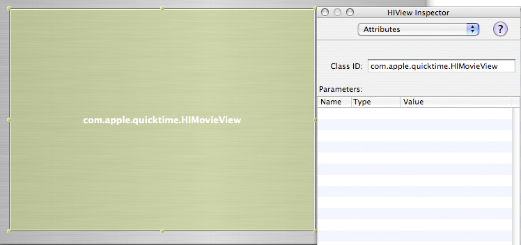

Q:
I've created a Window using Interface Builder containing an HIMovieView which was dragged into it from the Carbon-Enhanced Controls palette. When I call HIViewFindByID to find the view, the call fails with error -30584 errUnknownControl. I've made sure to check that the view's signature and ID are correct.
I've also tried to specifically call HIMovieViewCreate, but that fails with error -30581 errDataNotSupported. Is this a known issue?
A: Yes, there is currently a bug in HIMovieViewCreate with QuickTime 7 (r. 3882439). Consequently, HIViewFindByID fails because the runtime trying to create the view from the NIB is using HIMovieViewCreate and fails, therefore the view is never actually created.
There are however a couple of very simple workarounds:
1) If you would like to create an HIMovieView programatically, simply use HIObjectCreate instead.
Listing 1: Use HIObjectCreate instead of HIMovieViewCreate
HIObjectRef theHIMovieView;
// create an HIMovieview
HIObjectCreate(kHIMovieViewClassID, NULL, &theHIMovieView);
// set some attributes and a movie for the HIMovieView
HIMovieViewChangeAttributes((HIViewRef)theHIMovieView, kHIMovieViewStandardAttributes, 0);
HIMovieViewSetMovie((HIViewRef)theHIMovieView, aMovie);
...
2) If you would like to use Interface Builder, instead of using HIMovieView from the Carbon-Enhanced Controls palette use HIView and make sure it's Class ID is set to the kHIMovieViewClassID identifier com.apple.quicktime.HIMovieView as shown in figure 1.
When this is done, using standard HIView calls will work as expected, see listing 2.
Figure 1: Using HIView to specify an HIMovieView in IB.

Listing 2: Getting an HIMovieView created as a Custom Control in a NIB file.
HIViewID kMovieViewID = {'moov', 0};
HIViewRef theHIMovieView;
...
// get the window
CreateWindowFromNib(nib, CFSTR("MovieWindow"), &window);
// find our HIMovieView
HIViewFindByID(HIViewGetRoot(window), kMovieViewID, &theHIMovieView);
// install some event handlers
InstallWindowEventHandler(window, &MainWindowEventHandler,
GetEventTypeCount(windowEvents), windowEvents, window, NULL);
InstallHIObjectEventHandler((HIObjectRef)theHIMovieView, &HIMovieViewEventSniffer,
GetEventTypeCount(viewEvents), viewEvents, window, NULL);
// set some attributes and a movie for the HIMovieView
HIMovieViewChangeAttributes(theHIMovieView, kHIMovieViewAutoIdlingAttribute |
kHIMovieViewControllerVisibleAttribute,
kHIMovieViewEditableAttribute |
kHIMovieViewHandleEditingHIAttribute |
kHIMovieViewAcceptsFocusAttribute);
HIMovieViewSetMovie(theHIMovieView, aMovie);
...
ShowWindow(window);
...
Document Revision History
| Date |
Notes |
| 2008-03-11 |
Editorial |
| 2005-05-16 |
Describes how to work around HIMovieViewCreate failing to initialize the view in QuickTime 7 |
Posted: 2008-03-11
|